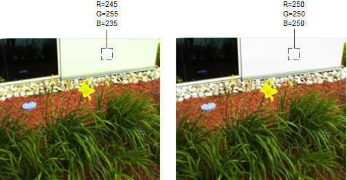
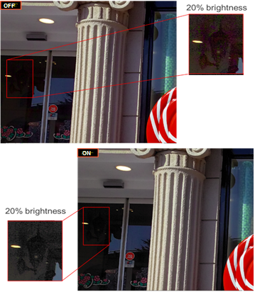
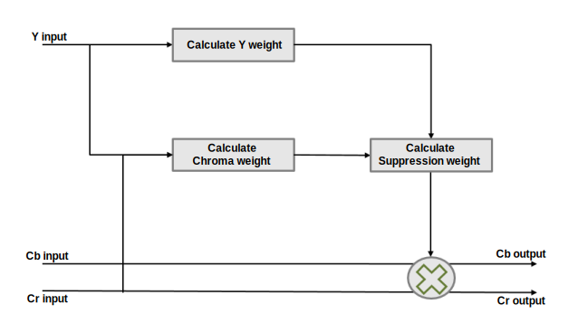
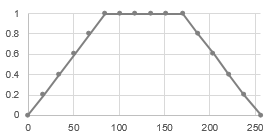
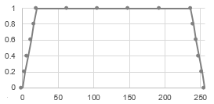
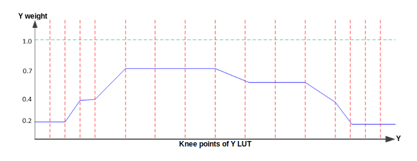
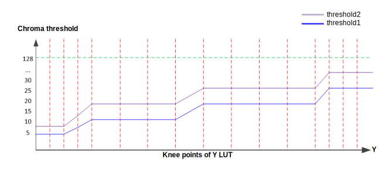

Bright areas in an image sometimes appear with a slight color tint that can be caused by incorrect white balance or tinting in the lens. The chroma suppression (CS) module removes or reduces color tints for a specified luma range.
Figure : Yellowish tint is removed using CS. (L) CS off; (R) CS on

Figure : Color artifacts in lowlight are suppressed using CS. (Top) CS off;
(Bottom) CS on

The chroma suppression processing uses both luma and chroma input to calculate the
suppression weight, as illustrated in the diagram.

Calculation of the luma weight and chroma weight both require the definition of a LUT
that specifies the luma knee points the user wants to control
(knee_point_LUT). The default knee point LUT has sixteen evenly
spaced points:
- 0 17 34 51 68 85 102 119 136 153 170 187 204 221 238 256
Figure : Evenly spaced knee points

If unevenly spaced points are preferred, it is recommended to use finer knee
points for dark areas and highlight areas to have more flexible control, such as the
following points:
- 0 4 8 12 16 20 63 106 149 192 236 240 244 2428 252 256
Figure : Example of unevenly spaced knee points

The luma weight index in the LUT associates a luma weight (y_weight_lut) with each knee point. When the luma weight
has a value of 0.0, the chroma suppression process is fully affected by the computed
chroma weight. When the luma weight has a value of 1.0, no chroma suppression is
applied. In general, apply a strong suppression for dark and highlight areas and do not
touch a middle tone color.
Figure : Example luma weight index on knee point LUT

Two chroma threshold indexes in the LUT (c_thr1_lut and c_thr2_lut) define
which chroma values are suppressed. A chroma value less than c_thr1_lut is suppressed with y_weight. A chroma value larger than
c_thr2_lut is not suppressed. A chroma value in
the area between the thresholds is suppressed with an interpolated chroma weight.
Figure : Example chroma thresholds on knee point LUT

The following diagram illustrates how each parameter affects the chroma suppression processing.
Figure : Effect of CS parameters